Get started
Role Center
In order to use Latvian Intrastat Reporting Localization, no specific role center is required, because the functionality can be accessed via search pane, whereas printout buttons are embedded inside ribbon under the tab ACTIONS.
Configuration package import
Basic necessary system setup for the use of Latvian Intrastat Reporting Localization is created, when applying the configuration package LVI.LVI.INTRASTAT.
- Click on the button Search for Page or Report... 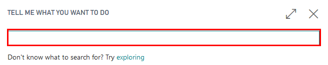
- Type Configuration Packages and select Configuration Packages from Lists 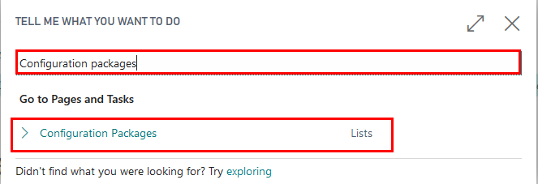
- Select LVI.LVI.INTRASTAT package from list of Config. Packages and press Apply Package. 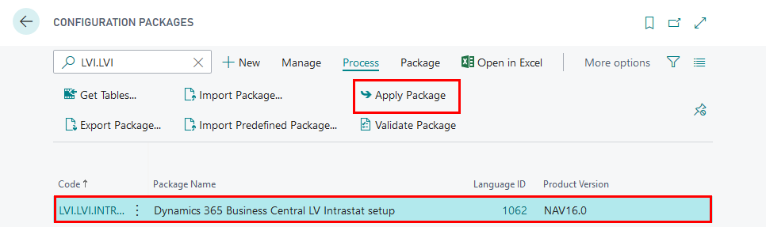
Configuration package ensures the following information:
- Country/Region
- Shipment Method
- Country/Region Translation
- Transaction Type
- Transport Method
Permissions Sets
Use of Latvian Intrastat Reporting Localization requires the following standard permission sets to be assigned for the user:
- D365 FINANCIAL REP.
Pre-requisites
The following information should be completed after importing configuration package:
- Click on the button Search for Page or Report...
- Type Company Information and select Company Information from Pages and Tasks

- Complete Company Information by entering:
- Name
- Address
- Post Code
- Country
- Registration No.
- VAT Registration No.

Setup
After applying LVI.LVI.INTRASTAT configuration package, complete the following
- Intrastat Setup
- Intrastat Journal Templates
- Tariff No., Transaction Type, Transport Method, Shipment Method
- Item cards
- Customer/Vendor cards
Intrastat Setup
After applying LVI.LVI.INTRASTAT configuration package, complete Intrastat Setup.
- Click on the button Search for Page or Report...
- Type Intrastat Setup and select Intrastat Setup 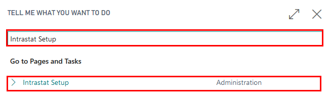
- Complete Intrastat Setup
- Report Receipts - enable, if you must include arrivals of received goods in Intrastat reports
- Report Shipments - enable, if you must include arrivals of received goods in Intrastat reports
- Intrastat Contact Type - not to be used
- Intrastat Contact No. - not to be used
- Default Transaction Type - select the default transaction type for regular sales shipments, service shipments, and purchase receipts. For example, "11".
- Default Transaction Type - Returns - select default transaction type for sales returns, service returns, and purchase returns. For example, "21"
Intrastat Journal Templates
After applying LVI.LVI.INTRASTAT configuration package, complete Intrastat Journal Templates.
- Click on the button Search for Page or Report...
- Type Intrastat Journal Templates and select Intrastat Journal Templates

- Create New Intrastat Journal Template
- Name - specify the name of the Intrastat journal template. For example, "INTRASTAT"
- Description - specify a description of the Intrastat journal template. For example, "Intrastat Journal"
Tariff No., Transaction Type, Transport Method, Shipment Method
Please refer to Dynamics 365 Business Central online user manual on creating new Tariff No., Transaction Type, Transport Method, Shipment Method. These data are part of Intrastat reporting and they are available online on webpage of Central Statistical Bureau. These data can be subject to change. When creating new values complete the following fields:
- Code - specify a code as it is required by Central Statistical Bureau
- Description - specify description as it is required by Central Statistical Bureau
Item cards
After applying LVI.LVI.INTRASTAT configuration package, complete Intrastat related information in each Item card
Click on the button Search for Page or Report...
Type Items and select Items from Pages and Tasks 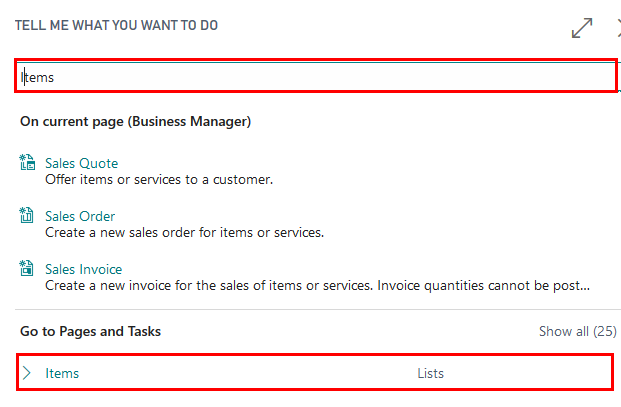
Open each Item card with type "Inventory" and update item card with the following data
- Net Weight - specify the net weight of the item per Base Unit of Measure
- Gross Weight - specify the gross weight of the item per Base Unit of Measure
- Tariff No. - specify a code for the item's tariff number
- Country/Region of Origin Code - specify a code for the country/region where the item was produced or processed. 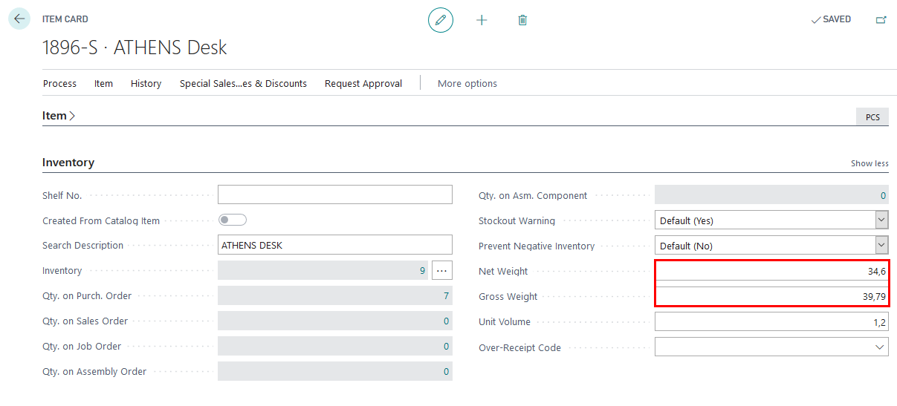 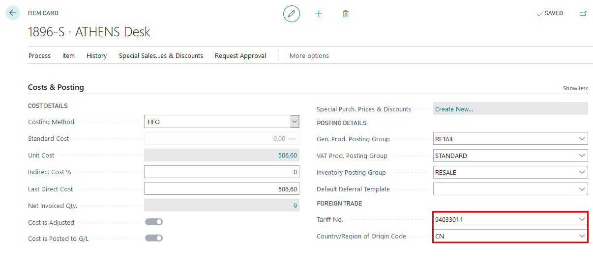
Note
Please note that it is deemed that the item card already has the mandatory fields completed, in order to ensure successful item receipt and shipment
Customer/Vendor cards
In order to use Intrastat functionality, ensure that all Customer/Vendor cards have Country/Region Code completed. 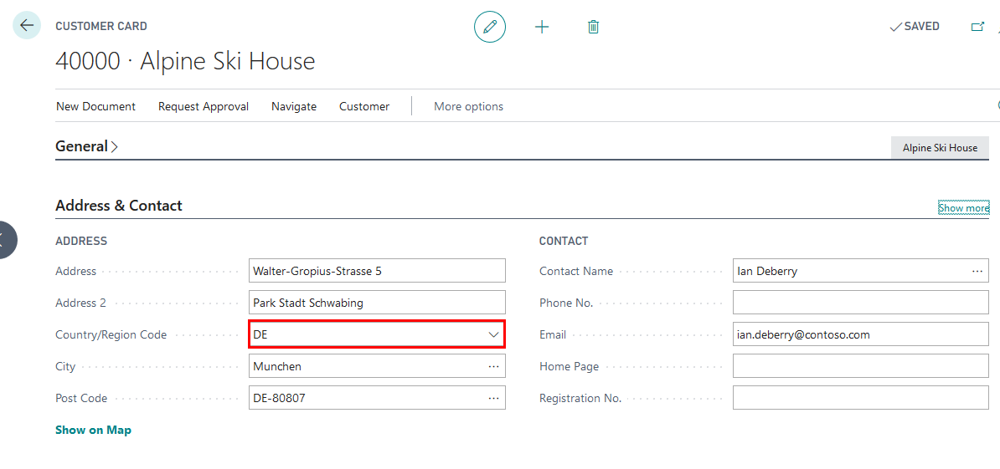 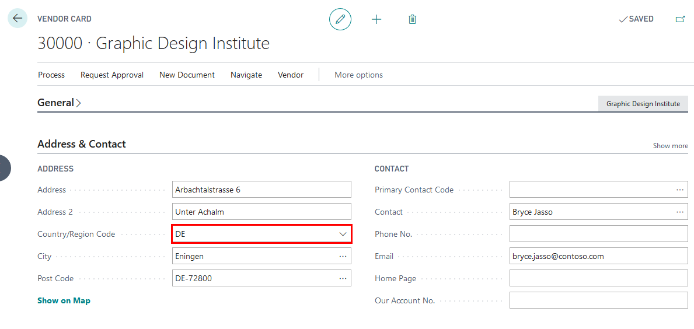
Note
Please note that it is deemed that the customer/vendor card already has the mandatory fields completed, in order to ensure successful item receipt and shipment.
Optionally, Shipment Method Code can be completed in Customer/Vendor cards.
How to use
How to use: Register EU receipts from Purchase Orders/Sales Return Orders/Transfer Orders
Purpose: In order to obtain proper Intrastat Reports, it is required to enter Intrastat required information inside the purchase/sales return/transfer document before posting EU receipt
Availability: In Purchase Orders/Sales Return Orders/Transfer Orders that can be accessed from Search for Page or Report…
Pre-requisites: The following information is required to be completed for the item in Item card before posting item receipt:
- Net Weight
- Gross Weight
- Tariff No.
- Country/Region of Origin Code
The following information is required to be completed for the Customer/Vendor/Location in Customer/Vendor/Location card before posting item receipt:
- Country/Region Code
The following information is required to be completed for the document (Purchase Orders/Sales Return Orders/Transfer Orders) before posting item receipt:
- Shipment Method
- Transaction Type
- Transport Method
How to use: Register EU shipments from Purchase Return Orders/Sales Orders/Transfer Orders
Purpose: In order to obtain proper Intrastat Reports, it is required to enter Intrastat required information inside the purchase return/sales/transfer document before posting EU shipment
Availability: In Purchase Return Orders/Sales Orders/Transfer Orders that can be accessed from Search for Page or Report…
Pre-requisites: The following information is required to be completed for the item in Item card before posting item shipment:
- Net Weight
- Gross Weight
- Tariff No.
- Country/Region of Origin Code
The following information is required to be completed for the Customer/Vendor/Location in Customer/Vendor/Location card before posting item shipment:
- Country/Region Code
The following information is required to be completed for the document (Purchase Orders/Sales Return Orders/Transfer Orders) before posting item shipment:
- Shipment Method
- Transaction Type
- Transport Method
How to use: Create Intrastat journal, print reports and create files for Central Statistics Burreau
- Click on the button Search for Page or Report...
- Type Intrastat Journals and select Intrastat Journals

- Create New Intrastat Journal Batch 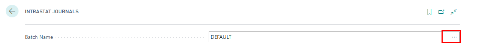 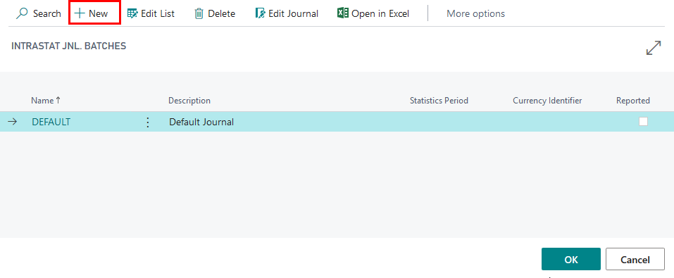
- Complete information for intrastat journal batch and press OK
- Name - specify a name for the intrastat journal; it is advised to create a new intrastat journal batch per each reporting period. For example, "2020_04"
- Description - specify a name for the intrastat journal. For example, "2020 April"
- Statistics Period - specify a statistics reporting period for the intrastat journal in the format YYMM. For example, "2004"

- In Intrastat journal batch 2020_04 press Suggest Lines 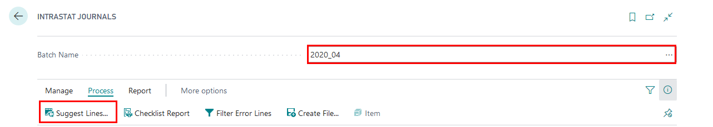
- In options review that the filters are set and press OK
- Starting Date - specify the starting date of intrastat reporting period. For example, "01.04.2020"
- Ending Date - pecify the ending date of intrastat reporting period. For example, "30.04.2020"
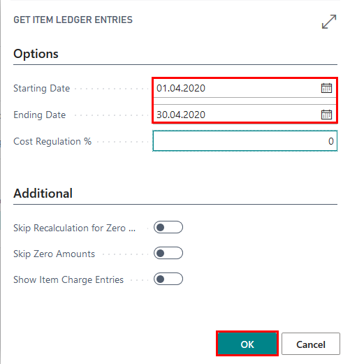
7. Review the lines created

Note
Intrastat journal cannot be created, if Tariff No. is missing in Item Card and there has been a EU receipt or EU shipment related to this item during Intrastat reporting period per which a report is created.
If some of the Intrastat related information is missing in Intrastat Journal, then it can be added manually by completing the required fields per each line.
Print Intrastat Overview Report or Create an XML file
- Report Type - select report type required
- Receipt 1-A
- Receipt 1-B
- Shipment 2-A
- Shipment 2B
- Reporter - select an employee from the list of employees, who is responsible for preparation of Intrastat reports
- Create CSB XML file
- if disabled, then a printout is to be created after pressing Print
- if enabled, then an XML file is to be created after pressing Print
- Report Type - select report type required
 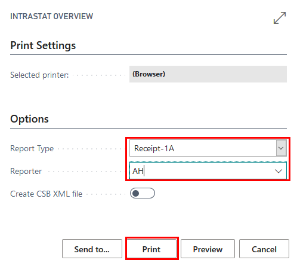
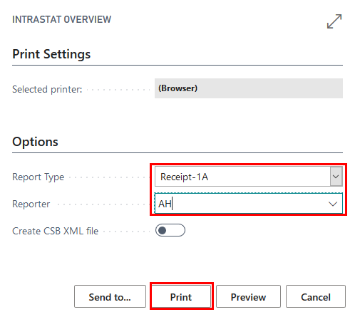